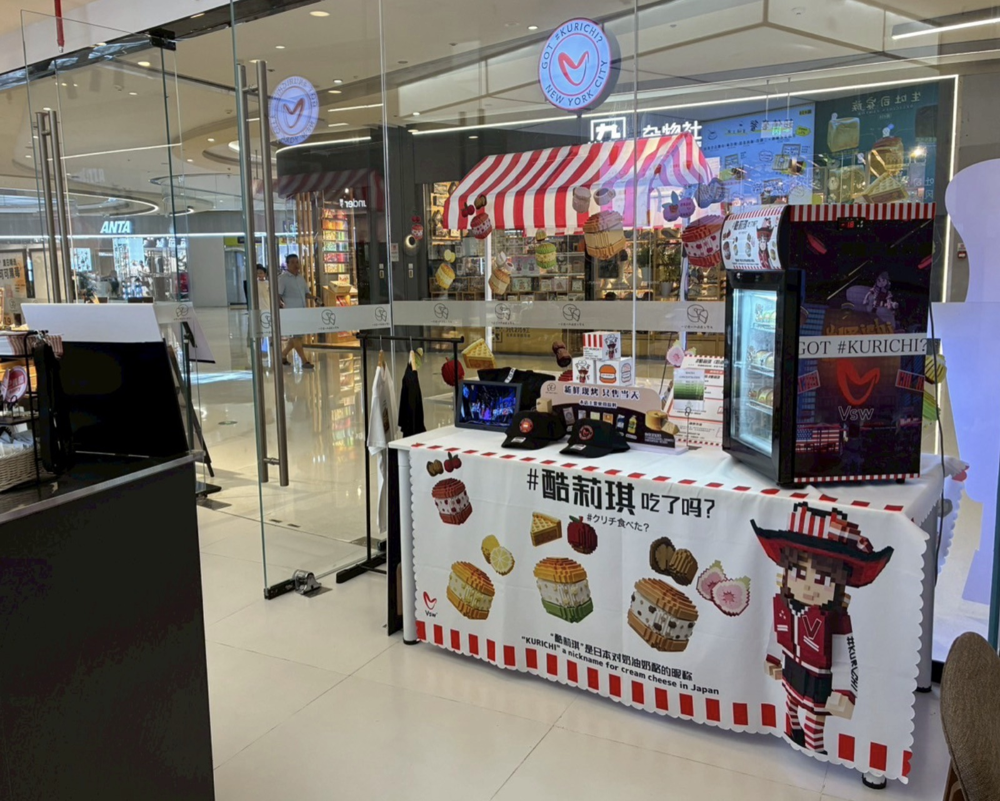
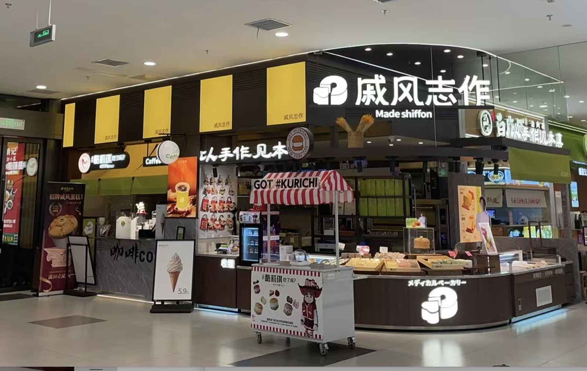

SHANGHAI / 上海
上海・常設キオスク店舗
PERMANENT STORE
大型商業施設内に構えた常設店舗。木造の屋根とメニューPOPで世界観を再現し、現地のお客様に「日本ブランド」としての安心感と新鮮さを届けています。
日本発のクリームチーズバーガー「#クリチ」は、構想や計画ではなく、すでに中国で実出店中です。 上海・長沙の3拠点で、現地のお客様に「酷莉琪 吃了吗？（クリチ食べた？）」の世界観をお届けしています。
「これから検討する」ではなく、「すでにお客様の手に届いている」。 中国本土の主要都市・大型商業施設にて、実際の店舗・POPUPとして稼働中です。
大型商業施設内に構えた常設店舗。木造の屋根とメニューPOPで世界観を再現し、現地のお客様に「日本ブランド」としての安心感と新鮮さを届けています。

赤白ストライプテントとKURICHIキャラクターで彩られたPOPUP。「#酷莉琪 吃了吗？（クリチ食べた？）」の現地ローカライズ表現で、若年層を中心に強いSNS反応を獲得しています。

日系大型ショッピングモール「イオン」の中央通路に出店。「GOT #KURICHI」の赤いPOPUPで、買い物客の動線上で確実に手に取られる場所での展開を実現しています。
中国の食市場は、若年層を中心に「見た目が華やかでSNSで共有したくなるスイーツ・パン」への関心が爆発的に高まっています。「#クリチ」はその波と高い親和性を持つブランドです。
小紅書・抖音を中心に、断面が美しい・色彩豊かなスイーツがバズの中心に。「#クリチ」の鮮やかな断面はそのままシェア素材として機能します。
食品衛生・品質・パッケージング・世界観構築まで一貫した日本発ブランドへの信頼は依然として高く、中価格帯スイーツ市場で優位性があります。
キオスク／POPUP／常設店舗いずれの形態でも展開可能な省スペース設計。商業施設側からの引き合いが続いている理由でもあります。
私たちの中国事業の最大の強みは、すでに実店舗が稼働していること、そして現地のビジネスパートナーが伴走していることです。机上の構想ではなく、現地の生活者と接点を持ちながら育てています。
上海・長沙の3拠点で店舗・POPUPを稼働中。SNS反応とリアル接点を蓄積し、ブランド体験の現地解像度を高めるフェーズ。
主要モールでの常設ポップアップ／フラッグシップ的な限定店舗へ展開。ライセンス・コラボ商品の現地展開も視野に入れる。
現地ライセンシーと連携した複数都市展開、抖音／天猫／京東などEC本格稼働。中国全土で「#クリチ」が選ばれる状態へ。
商業施設出店・ライセンシング・コラボレーション・OEM／ODM・取材依頼など、 中国事業に関するお問い合わせはお気軽にご連絡ください。